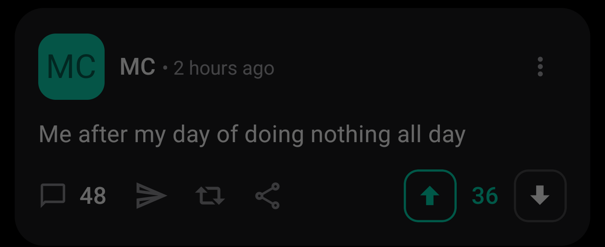

Offsides+
YikYak / Sidechat for Android

Why Offsides+
YikYak's official app is iOS-only. Its Android app was removed from Google Play in March 2023, when Sidechat bought YikYak. Offsides+ is a maintained, open-source Android client for the same Sidechat/YikYak service, forked from the deprecated Offsides app by Micah Lindley.
- DMs that actually send (upstream reused one client_id per thread, so only the first message landed)
- Group chats, poll results with percentages, server-side group search
- Anonymous mode that never leaks your username
- Failed posts keep your draft and show the server's real error
- YikYak-style dark theme, signed releases, installable alongside the original app
- Backup SMS login route when your verification code never arrives (v1.3.2)
Offsides+ is a third-party client and is not affiliated with Sidechat or YikYak. Free and open source under GPLv3, maintained by Darek Anderson. Original Offsides by Micah Lindley: upstream repo · buy him a coffee.